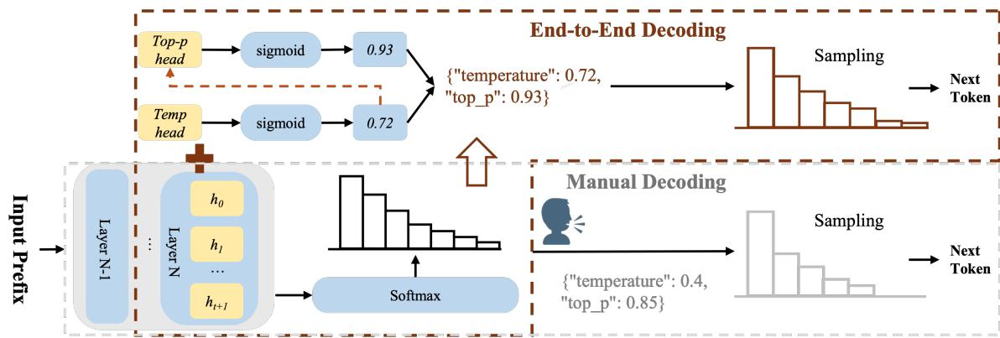

📚 每日论文简报
2025-10-31
为您精选了 6 篇高质量 AI 论文
📝 微观深度解读
推荐分数: 0.554
📖 简介：本文提出了Ouro（LoopLM）架构，通过在预训练阶段内置推理机制，显著提升大型语言模型的推理能力和参数效率。该方法采用递归计算和自适应深度策略，优化了知识操作，解决了传统模型在多步骤推理和计算效率上的不足。实验结果表明，Ouro在多个基准测试中表现优于同规模的现有模型，展示了其在推理时代的潜力。

推荐分数: 0.540
📖 简介：本文提出了一种分析框架，系统研究大型语言模型（LLMs）在后期训练中如何学习和表达人类价值观。研究发现，监督微调（SFT）阶段是价值观的主要塑造期，而偏好优化阶段的影响有限。通过量化“价值漂移”，并利用合成偏好数据集，研究揭示了不同优化算法对价值观的不同影响，为模型对齐提供了实践指导。

推荐分数: 0.516
📖 简介：本文提出了EQSPEC和EXSPEC两种方法，解决了大语言模型批量推测解码中的“ragged tensor”问题。EQSPEC确保输出等价性，通过定义同步要求来处理不规则张量；EXSPEC则通过动态分组和懒惰对齐策略，显著提高了吞吐量，达到批量大小为8时的3倍提升，同时保持95%的输出等价性。

推荐分数: 0.487
📖 简介：本文提出了一种新颖的协同稀疏和低秩压缩方法（SSLC），有效结合了稀疏优化与低秩近似，解决了大型语言模型（LLM）在压缩过程中性能下降的问题。SSLC通过统一的优化框架，实现了在不牺牲性能的情况下，显著压缩模型并提升推理速度，实验结果显示在Qwen2.5模型上可达50%压缩率和1.63倍加速。

推荐分数: 0.453
📖 简介：本文系统研究了推理大语言模型（RLLM）的服务性能，揭示了其与传统LLM在内存使用、请求延迟等方面的显著差异。通过引入ASU评估框架，评估了多种优化技术的有效性，发现模型量化和推测解码能提升服务效率，而前缀缓存可能降低准确性。研究为RLLM在实际应用中的优化提供了重要见解。

推荐分数: 0.451
📖 简介：本文提出了AutoDeco，一种新颖的动态解码架构，解决了大型语言模型（LLM）在生成过程中对手动调参的依赖问题。AutoDeco通过在每个生成步骤中自我调节温度和top-p值，实现真正的“端到端”生成，显著提升了生成质量和灵活性，同时允许模型根据自然语言指令调整解码策略。实验结果表明，AutoDeco在多个基准上超越传统解码方法，展示了其高效性和可控性。

查看详细解读 →